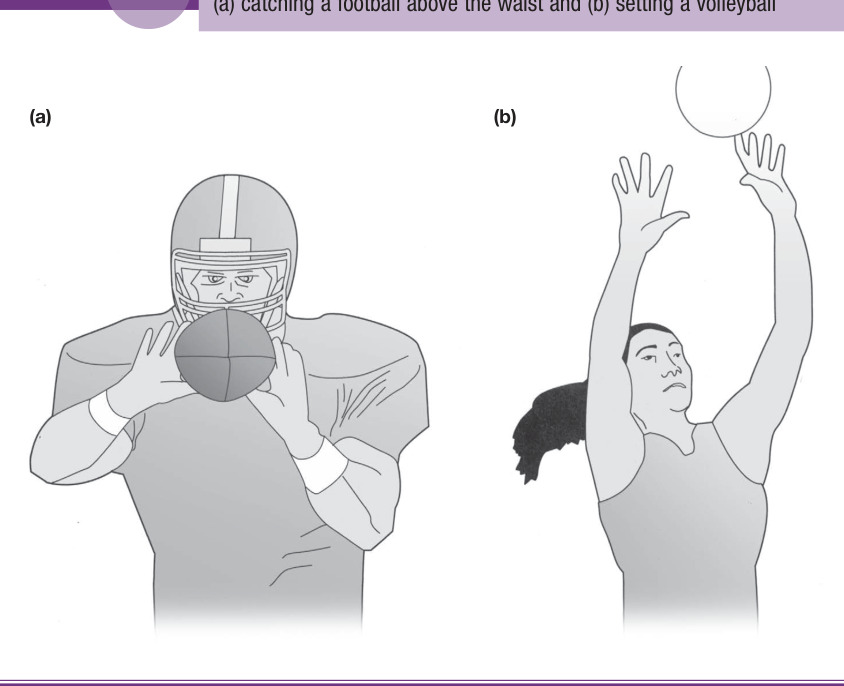

Chương 7 — Người Học: Những Xem Xét Trước Khi Huấn Luyện
Huấn luyện viên Hernandez quan sát Jackson đang khởi động cho môn nhảy sào. Sau vài lần thử, anh gọi Jackson lại để giải thích cách sửa một lỗi kỹ thuật. Khi huấn luyện viên Hernandez kết thúc lời giải thích, anh hỏi liệu Jackson có hiểu điều anh vừa nói không. Jackson trả lời là có và quay trở lại cuối đường chạy. Khi đến nơi, cậu quay sang một người bạn đồng đội và hỏi: “Bạn có thể chỉ cho mình thấy huấn luyện viên vừa nói gì không?” Sau khi động tác được trình diễn lại, cậu đã hiểu hoàn toàn.
Có lẽ yếu tố duy nhất có ảnh hưởng lớn nhất đến khả năng hiểu các khái niệm mới và đạt được sự thành thạo vận động của một người học chính là giao tiếp. Giao tiếp hiệu quả diễn ra khi các thông điệp rõ ràng, ngắn gọn và nhất quán, và người nhận hiểu được điều người gửi muốn truyền đạt. Cách một người nghe thông điệp của bạn phụ thuộc vào nhiều yếu tố, và người giáo viên, huấn luyện viên hoặc nhà trị liệu nào nhận ra ảnh hưởng của khác biệt cá nhân đối với cách thông tin được tiếp nhận sẽ có thể điều chỉnh giao tiếp của mình tốt hơn nhằm cung cấp hướng dẫn và thiết kế những trải nghiệm có ý nghĩa cho từng người học.
Thông tin có thể được truyền tải qua một số phương thức cảm giác. Trong tình huống mở đầu chẳng hạn, Jackson đã hiểu động tác tốt hơn khi cậu nhìn thấy nó được trình diễn. Video, các ứng dụng phân tích chuyển động, hình ảnh, biểu đồ và gương cũng có thể được dùng để cung cấp cho người học một biểu diễn trực quan về một kỹ năng, yếu tố kỹ thuật hoặc khái niệm. Hơn nữa, lời giải thích có thể kết hợp các từ gợi ý thị giác như “nhìn,” “xem,” hay “ngó.” Các phương thức khác cần cân nhắc gồm xúc giác, cảm giác vận động và thính giác. Một nhà vật lý trị liệu chẳng hạn, có thể dùng một tín hiệu xúc giác (chạm cơ thể) để giúp bệnh nhân cô lập một nhóm cơ mục tiêu. Một huấn luyện viên có thể giúp vận động viên phát triển cảm nhận về cảm giác của động tác đúng thông qua việc sử dụng mô phỏng, hoặc dùng các từ hành động (kèm theo tính từ khi thích hợp) như “bùng nổ” hay “xoay nhanh” để mô tả cách động tác nên được thực hiện. Việc cho người học nhận biết độ ồn của tiếng tiếp đất khi nhảy lên khỏi hộp, nhấn mạnh nhịp điệu hay tempo của một động tác, hoặc dùng các từ gợi ý như “nghe” hay “lắng nghe” cũng có thể là những chiến lược hiệu quả giúp người học hiểu mình đang làm gì và/hoặc đang cố làm gì. Có thể tìm thêm ví dụ trong Bảng 7.1.
Làm thế nào để xác định nên dùng chiến lược giao tiếp nào? Và làm thế nào để người thực hành xác định liệu chiến lược đã chọn có hiệu quả hay không? Hãy chú ý đến các manh mối mà người học đưa ra. Lắng nghe những từ miêu tả mà người học dùng để đánh giá thực hiện của mình và những câu hỏi họ đặt ra. Họ có thường rơi vào một trong các phương thức giao tiếp không? Ví dụ gồm “Bạn có thể chỉ cho tôi thấy tôi đang làm gì không?” hay “Cảm giác đó nên như thế nào?” Ngoài ra, hãy lưu ý những hành vi có thể gợi ý rằng người học hiểu thông tin tốt hơn khi được trình bày qua một phương thức khác. Chẳng hạn, họ có yêu cầu làm rõ theo một phương thức khác không? Khi huấn luyện viên Hernandez giải thích bằng lời các lỗi kỹ thuật (thính giác) và cách sửa chúng, Jackson đã không hiểu đầy đủ và đã tìm cách khác để nhận thông tin thông qua biểu diễn trực quan. Cuối cùng, hãy chắc chắn kiểm tra và xác minh rằng người học đã hiểu
BẢNG 7.1
Ví dụ về các phương thức khác nhau có thể được dùng để giao tiếp:
- Vỗ nhịp của 5–7 bước cuối trong cú ném lao.
- Kiểm tra sự thẳng hàng của đầu gối bằng gương khi thực hiện động tác squat hoặc lunge.
- Vẽ sơ đồ chiến lược hoặc chiến thuật dùng trong một trận đấu lên bảng trắng hoặc máy tính bảng.
- Giải thích bằng lời một trình tự các động tác.
- Thực hiện đi dạo thử (walkthrough) một bài tập.
- Nhắc người học ấn vào một dải kháng lực.
- Chỉ ra sự khác biệt về âm thanh khi một chân được hạ xuống một cách có kiểm soát so với không kiểm soát trong động tác glute bridge kick out.
- Tải một ứng dụng đồng hồ nhịp (metronome) và đặt nhịp theo cadence đi bộ mong muốn.
Thử Thách Trí Não 7.1
Thảo luận tầm quan trọng của giao tiếp hiệu quả đối với giáo viên, huấn luyện viên và nhà trị liệu. Trong cuộc thảo luận của mình, hãy nêu rõ những người mà bạn sẽ phải giao tiếp cùng và thời điểm bạn sẽ sử dụng giao tiếp trong suốt quá trình học tập.
điều đã được truyền đạt. Nếu họ còn bối rối hoặc có câu hỏi, hãy biến đổi thông điệp hoặc truyền đạt nó qua một phương thức khác. Lưu ý rằng trong một số trường hợp, người học có thể không hiểu đầy đủ một thông điệp dù đã tỏ ra hiểu, như trường hợp của Jackson khi huấn luyện viên kiểm tra sự hiểu biết của cậu.
NHẬN THỨC
Bất kể phương thức được dùng để giải thích cách thực hiện một nhiệm vụ, giao tiếp đó thường gợi ra xử lý tường minh. Học tường minh làm cho người học nhận thức rõ ràng về những gì cần làm, và người học sẽ sử dụng việc kiểm tra giả thuyết có chủ đích để xác định cái gì hiệu quả và cái gì không, trong khi họ tiếp tục làm rõ hiểu biết về các yêu cầu của động tác. Cuối cùng, nhờ luyện tập và phản hồi, tri thức về việc cần làm, hay tri thức tường minh (declarative knowledge), được chuyển hóa thành tri thức thủ tục (procedural knowledge), tức là cách làm, và kỹ năng được thực hiện tự động mà không cần chú ý.
Ngược lại, học tiềm ẩn xảy ra khi người học tiếp thu thông tin một cách không cố ý và không có ý thức. Khi học đi xe đạp chẳng hạn, bạn đã học cách giữ thăng bằng ở mức độ vô thức (tri thức thủ tục), về cơ bản là bỏ qua bước tri thức tường minh vốn diễn ra trong học tường minh. Kết quả là, bạn có thể thấy rất khó mô tả những hành động đó bằng lời. Hãy thử xem!
Nghiên cứu đã chỉ ra rằng không phải lúc nào cũng cần cung cấp thông tin liên quan đến nhiệm vụ và trong một số trường hợp, làm vậy thậm chí có thể cản trở việc học (Masters, van Duijn, & Uiga, 2019). Sử dụng một nhiệm vụ bắt bóng mô phỏng bằng máy tính, Green và Flowers (1991) nhận thấy rằng người tham gia có thể xác định mối quan hệ dự báo của quỹ đạo bóng một cách tiềm ẩn, mà không được cho biết về nó qua hướng dẫn bằng lời tường minh. Hơn nữa, nhóm học tiềm ẩn này cho thấy sự cải thiện thực hiện lớn hơn so với nhóm học tường minh, những người được hướng dẫn về các quy tắc nền tảng của mối quan hệ quỹ đạo bóng. Các tác giả cho rằng thực hiện kém hơn của nhóm học tường minh là do quá tải các nguồn lực chú ý sẵn có—vừa cố nhớ quy tắc và cách áp dụng nó, vừa đáp ứng các yêu cầu của chính việc thực hiện động tác.
Magill (1998) cung cấp thêm bằng chứng ủng hộ quan điểm rằng nhận thức có ý thức có thể không cần thiết để tiếp thu kiến thức về các đặc điểm điều chỉnh của môi trường của một kỹ năng vận động. Trong một nghiên cứu theo dõi, người tham gia đã có thể khai thác một mối liên hệ được cài sẵn mà không được cho biết về nó qua hướng dẫn bằng lời. Sekiya (2009) ghi nhận những phát hiện tương tự. Những lợi ích học tập bền bỉ hơn, ít bị ảnh hưởng bởi lo âu và căng thẳng trong tình huống áp lực, cũng đã được tìm thấy ở học tiềm ẩn (Masters et al., 2019). Masters và Maxwell (2008) giải thích những phát hiện này trong bối cảnh của thuyết tái đầu tư (reinvestment theory), cho rằng dưới áp lực, các vận động viên học tường minh sẽ quay lại với tri thức tường minh đã tiếp thu khi đầu tiên học kỹ năng. Việc phân bổ chú ý này vào xử lý có ý thức các tri thức tường minh liên quan đến nhiệm vụ sẽ can thiệp vào các quá trình kiểm soát tự động, làm gián đoạn thực hiện. Ngược lại, vì người học tiềm ẩn không nhận thức được phần lớn tri thức họ đã tiếp thu, nên tái đầu tư ít có khả năng xảy ra.
Vì sự khác biệt giữa học tiềm ẩn và học tường minh nằm ở lượng tri thức tường minh hoặc mô tả mà người học hình thành về việc thực hiện động tác, nên việc giảm thiểu cơ hội tiếp thu có ý thức loại tri thức đó là chìa khóa để thúc đẩy học tiềm ẩn. Thay vì hướng dẫn một cầu thủ bóng chày tìm các tín hiệu cụ thể để nhận diện hay dự đoán một cú ném sắp tới (chẳng hạn như cách bóng rời khỏi tay cầu thủ ném), Magill (1998) đề xuất rằng người hướng dẫn nên hướng sự chú ý của người học vào những vùng giàu thông tin (chẳng hạn như vùng bóng được buông ra trong cú ném). Tương tự, người học nên được tiếp xúc với các tín hiệu điều chỉnh then chốt trong nhiều tình huống thực hiện khác nhau để trở nên nhạy bén một cách tiềm ẩn với chúng. Người học cũng sẽ ít nhận thức được các quy tắc và hành động tường minh cần thiết để thực hiện một nhiệm vụ khi lời hướng dẫn hướng sự chú ý của họ vào các tác động của chuyển động mình (tiêu điểm chú ý ngoại vi) thay vì hướng chú ý vào cơ thể. Việc dùng ẩn dụ cũng gợi ra xử lý tiềm ẩn, vì chúng truyền tải hành động mong muốn bằng cách liên hệ nó với một mô hình quen thuộc mà không đề cập cụ thể đến các động tác riêng lẻ cấu thành hành động đó. Cuối cùng, lợi ích của học tiềm ẩn đã được chứng minh ở giai đoạn luyện tập đầu tiên nhằm giảm thiểu lỗi thực hiện, được gọi là học không lỗi (errorless learning) (ví dụ Poolton, Masters, & Maxwell, 2005). Trong học không lỗi, số lỗi mắc phải trong luyện tập được
giảm có chủ đích bằng cách cho người học ban đầu thực hiện các nhiệm vụ đơn giản, sau đó tăng dần độ khó. Trong trò chơi Cornhole chẳng hạn, người học sẽ bắt đầu bằng cách luyện tập rất gần bảng, nơi các cú ném dễ trúng đích, rồi dần dần lùi xa hơn cho đến khi đạt khoảng cách ném quy định. Tiền đề đằng sau học không lỗi là bằng cách giảm số lỗi, bạn thực sự đang giảm nhu cầu phải có ý thức điều chỉnh động tác, từ đó thúc đẩy xử lý tiềm ẩn. Dù học không lỗi thường được dùng như một phương pháp hướng dẫn cho những người có chức năng trí nhớ và điều hành bị suy giảm (de Werd et al., 2013), tính hữu ích của nó đối với phát triển kỹ năng vận động vẫn chưa rõ ràng (xem Lee et al., 2016).
CHUYỂN GIAO VIỆC HỌC
Một khác biệt cá nhân khác mà người thực hành nên cân nhắc khi tăng cường giao tiếp và thiết kế cơ hội học tập tối ưu là kinh nghiệm quá khứ của người học. Trong suốt cuộc đời của một người, tri thức tích lũy dần, cũng như các lần tiếp xúc với nhiều kỹ năng khác nhau; tổng hợp các kinh nghiệm quá khứ ảnh hưởng đến khả năng học kỹ năng mới của cá nhân theo cả hướng tích cực lẫn tiêu cực. Hiện tượng này, trong đó việc học một kỹ năng mới hoặc thực hiện nó trong điều kiện mới có thể bị ảnh hưởng bởi kinh nghiệm quá khứ với một hoặc nhiều kỹ năng khác, được gọi là chuyển giao.
Các Loại Chuyển Giao
Có ba loại chuyển giao: tích cực, tiêu cực và bằng không. Chuyển giao tích cực xảy ra khi kinh nghiệm quá khứ của người học với một kỹ năng tạo thuận lợi cho việc học một kỹ năng mới hoặc sử dụng một kỹ năng trong bối cảnh khác. Chẳng hạn, các sơ đồ phòng thủ khu vực dùng trong bóng bầu dục và bóng rổ có nhiều điểm chung. Trong trường hợp này, tri thức của người học về phòng thủ khu vực trong bóng bầu dục có khả năng tăng tốc độ mà người đó học phòng thủ khu vực trong bóng rổ. Chuyển giao tiêu cực xảy ra khi kinh nghiệm quá khứ của người học với một kỹ năng cản trở hoặc ngăn cản việc học một kỹ năng mới hoặc thực hiện một kỹ năng trong điều kiện mới. Dù việc vung gậy trong bóng chày mềm (softball) và bóng chày (baseball) có đặc điểm chuyển động tương tự, cách theo dõi cú ném sắp tới lại khác biệt đáng kể giữa hai môn. Trong bóng chày, cầu thủ ném dùng động tác ném qua vai, khiến quỹ đạo bóng đi từ cao xuống thấp. Trong bóng chày mềm, cầu thủ ném dùng động tác ném dưới tay, và bóng đi lên khi tiến về phía bản. Do đó, kinh nghiệm trước đây trong bóng chày có thể tạm thời cản trở thực hiện cú đánh trong bóng chày mềm. Cuối cùng, khi hai kỹ năng hoàn toàn không liên quan, chẳng hạn như bơi kiểu bướm và thủ môn trong bóng nước, chuyển giao bằng không xảy ra, vì kinh nghiệm với kỹ năng thứ nhất không ảnh hưởng gì đến kỹ năng thứ hai.
Dù người thực hành muốn tận dụng chuyển giao tích cực, chuyển giao tiêu cực vẫn có thể xảy ra và thường là kết quả của việc phải học một đáp án mới cho một kích thích đã được học kỹ. Một ví dụ kinh điển về chuyển giao tiêu cực có thể thấy khi một cầu thủ cầu lông giỏi quyết định học tennis. Trong cầu lông, cú đánh thuận tay cần một cú lắc cổ tay. Trong tennis thì không như vậy, vì đóng góp của cổ tay là rất nhỏ. Ban đầu, cầu thủ cầu lông có thể cố đưa cú lắc cổ tay vào cú thuận tay tennis. May mắn thay, hầu hết các tác động chuyển giao tiêu cực đều tạm thời và có thể được khắc phục bằng luyện tập.
Các Thuyết Về Chuyển Giao
Hiểu được nền tảng lý thuyết của chuyển giao sẽ giúp giáo viên, huấn luyện viên hoặc nhà trị liệu thiết kế những trải nghiệm học tập thúc đẩy chuyển giao tích cực. Sự hiểu biết này cũng giúp người thực hành giải thích những khó khăn mà cá nhân có thể biểu lộ do chuyển giao tiêu cực.
Video trên web: Trình diễn chuyển giao tiêu cực: www.youtube.com/watch?v=MFzDaBzBlL0&feature=youtu.be.
Thuyết Yếu Tố Giống Nhau
Thuyết yếu tố giống nhau ban đầu giả định rằng chuyển giao dựa trên số yếu tố chung mà hai kỹ năng có thể chia sẻ (Thorndike, 1914). Người ta cho rằng hai kỹ năng chia sẻ càng nhiều yếu tố giống nhau thì chuyển giao tích cực từ kỹ năng này sang kỹ năng kia càng lớn. Theo đó, chúng ta mong đợi chuyển giao tích cực xảy ra giữa các kỹ năng nhặt cúc áo và nhặt đồng xu, trong khi mức độ chuyển giao giữa cú putt trong golf và cú sút bằng mu bàn chân trong bóng đá là không đáng kể.
Osgoode (1949) đã sửa đổi thuyết yếu tố giống nhau bằng cách nêu rõ rằng, thay vì các yếu tố giống nhau, chính sự tương đồng giữa các điều kiện kích thích và đáp án của hai nhiệm vụ là nền tảng. Do đó, chúng ta mong đợi mức độ chuyển giao tích cực cao khi các điều kiện kích thích và đáp án của nhiệm vụ đã tiếp thu trước đó giống với nhiệm vụ đang được học.
Khó khăn học tập phát sinh khi hai kỹ năng có yêu cầu kích thích–đáp án đối ngược. Ví dụ, chúng ta dự đoán chuyển giao tiêu cực khi kỹ năng được giới thiệu có cùng kích thích với kỹ năng đã học trước đó nhưng lại đòi hỏi một đáp án khác. Một người mua một chiếc xe đạp leo núi mới chẳng hạn, sẽ gặp một số bực bội tạm thời nếu cơ chế sang số khác với chiếc xe họ từng sở hữu.
Thuyết Xử Lý Phù Hợp Với Chuyển Giao
Thuyết yếu tố giống nhau không giải thích được mọi điều kiện chuyển giao có thể có. Các khía cạnh chiến lược và khái niệm của trò chơi hay nhiệm vụ cũng có thể được chuyển giao. Kết quả là, thuyết xử lý phù hợp với chuyển giao (transfer appropriate processing theory) được đề xuất nhằm giải thích sự tương đồng trong xử lý nhận thức giữa các điều kiện luyện tập và tiêu chí thực hiện (Morris, Bransford, & Franks, 1977; Bransford et al., 1979; Lee, 1988). Theo thuyết này, chúng ta mong đợi chuyển giao tích cực
khi các điều kiện luyện tập yêu cầu người học tham gia vào các quá trình giải quyết vấn đề tương tự như những quá trình mà nhiệm vụ tiêu chí đòi hỏi.
Trong bóng chuyền, khi một cú đập được thực hiện vượt qua khối chắn, cầu thủ phòng thủ có thể dùng một trong bốn kỹ năng phòng thủ chính: chuyền cẳng tay, lăn người, lao người hoặc nằm sải (sprawl). Kỹ năng mà cầu thủ phòng thủ chọn phụ thuộc vào nhiều yếu tố cần được đánh giá ngay lập tức. Để tạo điều kiện cho cầu thủ chọn đúng kỹ năng rồi thực hiện chính xác, những người ủng hộ xử lý phù hợp với chuyển giao sẽ khuyến nghị luyện tập từng kỹ năng phòng thủ trong cùng một buổi luyện tập nhưng theo thứ tự ngẫu nhiên, thay vì luyện từng kỹ năng riêng biệt (nhằm tận dụng hiện tượng gọi là nhiễu bối cảnh). Hơn nữa, việc liên tục thay đổi hướng, tốc độ, vị trí và quỹ đạo của quả bóng sắp tới sẽ giúp bảo đảm chuyển giao tích cực tối đa. Chiến lược luyện tập này, được gọi là luyện tập biến đổi, buộc người học phải tham gia vào xử lý nhận thức thực tế, vì người học sẽ không bao giờ ở đúng cùng một tình huống hai lần. Cả nhiễu bối cảnh lẫn luyện tập biến đổi sẽ được thảo luận chi tiết hơn trong Chương 10.
Chuyển Giao Và Thiết Kế Hướng Dẫn
Nhiều quyết định hướng dẫn liên quan đến trình tự trình bày và việc sử dụng các công cụ hỗ trợ giảng dạy dựa trên các nguyên tắc chuyển giao. Ví dụ, các phiên bản đơn giản hóa của kỹ năng, bài tập và trò chơi đóng vai trò tiền đề cho các phiên bản phức tạp hơn sẽ được giới thiệu sau này. Các tiến trình kỹ năng—chẳng hạn như học nhảy xuống hồ bơi, trong đó người học trước tiên được dạy nhảy từ tư thế quỳ ở thành hồ, rồi tiến tới tư thế ngồi xổm, tư thế bước chân và cuối cùng là tư thế đứng—dựa trên giả định rằng kinh nghiệm với các phiên bản đơn giản hóa sẽ chuyển giao tích cực sang động tác thực tế, tạo thuận lợi cho việc tiếp thu nó. Tương tự, các trò chơi dẫn nhập—chẳng hạn như T-ball, bóng đá sân bên, five hundred trong bóng chày mềm hoặc bóng chày, keep away trong bóng rổ, và bóng chuyền ba cú chạm—đã được dùng để hỗ trợ người học.
Sự ủng hộ cho việc sắp xếp trình tự kỹ năng đã được cung cấp bởi một số nghiên cứu. Coldwells và Hare (1994) cho thấy các kỹ năng tennis ngắn đã chuyển giao tích cực sang tennis sân cỏ. O'Keefe, Harrison, và Smyth (2007) chứng minh các tác động chuyển giao tích cực từ luyện tập cú ném qua vai, dẫn đến những hiệu ứng học tập đáng kể cho cú đánh cao trong cầu lông và cú ném lao; điều này ủng hộ ý tưởng về chuyển giao tích cực giữa các kỹ năng vận động cơ bản và các kỹ năng đặc thù môn thể thao. Ngoài ra, các bài học trượt ván được cho là chuyển giao tích cực sang học một kỹ năng trượt tuyết (Künzell & Lukas, 2011), và luyện tập với một quả bóng được điều chỉnh (bóng futsal) chuyển giao tích cực sang thực hiện kỹ năng chuyền bóng bằng quả bóng đá quy chuẩn (Oppici et al., 2018).
Những điều chỉnh khác có thể được thực hiện khi kỹ năng liên quan đến nguy cơ chấn thương tiềm ẩn hoặc tốn kém, khi thiếu cơ sở vật chất luyện tập, hoặc khi không thể luyện tập trong bối cảnh thực tế. Các vận động viên thể dục dụng cụ trước tiên học các kỹ năng phức tạp
và có khả năng nguy hiểm với một số loại công cụ hỗ trợ giảng dạy, chẳng hạn như dây an toàn, nhằm giảm thiểu nguy cơ chấn thương. Xe đạp được trang bị bánh phụ. Các phi công chiến đấu luyện tập trên máy mô phỏng chuyến bay cho phép vô số lần thử luyện tập với rủi ro và chi phí tối thiểu. Các phi hành gia luyện tập dưới nước, vì môi trường này mô phỏng tình trạng không trọng lực mà họ sẽ trải nghiệm trong không gian. Trong môi trường lâm sàng, thiết bị BTE Work Simulation cho phép bệnh nhân mô phỏng các hoạt động như lái xe, vặn chìa khóa, kéo núm và đạp phanh; mô hình Resusci® Anne (từ Laerdal Medical) giúp sinh viên học hô hấp cứu hộ và CPR; và C-Mill giúp bệnh nhân học các chiến lược né tránh trong một môi trường an toàn và được kiểm soát (xem www.youtube.com/watch?v=65XrJ9DG3mM#t=11 để xem trình diễn).
Cuối cùng, những tiến bộ trong công nghệ cũng đã khơi dậy sự quan tâm ngày càng tăng đối với việc sử dụng thực tế ảo (VR). Khi người ta cẩn trọng bảo đảm rằng môi trường mô phỏng có mức độ liên kết cao với bối cảnh thực hiện (còn gọi là mức độ trung thực hành động cao), kết quả nhìn chung đều thuận lợi. Ví dụ, Rauter et al. (2013) chứng minh những tiến bộ kỹ năng trong chèo thuyền scull bằng một trình mô phỏng thực tế ảo đa phương thức cho phép người chèo nhìn, nghe và cảm nhận sự tương tác giữa mái chèo và nước khi họ đẩy chiếc thuyền ảo tiến về trước. Các ví dụ khác về chuyển giao thành công từ môi trường VR trong thể thao gồm đánh bóng chày (Gray, 2017), ném phi tiêu (Tirp et al., 2015), kỹ năng ra quyết định trong bóng rổ (Pagé, Bernier, & Trempe, 2019), học cú putt trong golf (Harris et al., 2020), phát triển kỹ năng bóng bàn (Michalski et al., 2019), và thực hiện tennis (Le Noury et al., 2021). Thực tế ảo cũng đang được dùng với tần suất ngày càng tăng trong phục hồi chức năng thể chất. Chuyển giao tích cực đã được tìm thấy cho việc vượt và né chướng ngại vật (Kim, Schweighofer, & Finley, 2019; LoJacono et al., 2018), dáng đi, khả năng di chuyển và kiểm soát tư thế (ví dụ Feng et al., 2019; Gibbons et al., 2016; Shema et al., 2014), phục hồi chi trên (Levin, Weiss, & Keshner, 2015), và hồi phục sau một cú ngã do trượt chân (Parijat, Lockhart, & Liu, 2015).
Hình 7.1: Các tiến trình kỹ năng giả định rằng kinh nghiệm với các phiên bản đơn giản hóa, chẳng hạn như nhảy từ thành hồ bơi, sẽ chuyển giao tích cực sang thực hiện kỹ năng nâng cao hơn, chẳng hạn như nhảy từ bảng nhảy.
GHI CHÚ NGHIÊN CỨU
Người ta ước tính rằng 47 phần trăm số cú ngã ở người cao tuổi là kết quả của việc vấp phải chướng ngại vật (Chien, Post, & Siu, 2018). Dù các chương trình luyện tập có thể cải thiện hành động né chướng ngại vật, những hạn chế về không gian và nguồn lực vật chất có thể là rào cản cản trở việc triển khai chúng ở một số cơ sở lâm sàng. Một giải pháp thay thế tiềm năng là sử dụng chướng ngại vật ảo trong luyện tập đi bộ trên máy chạy bộ. Sau khi tiến hành bài kiểm tra trước về việc vượt chướng ngại vật trong môi trường thực, LoJacono và các cộng sự (2018) đã thu thập dữ liệu chuyển động của 20 người trẻ khỏe mạnh và 20 người cao tuổi khỏe mạnh khi họ đi trên máy chạy bộ trong khi xem một môi trường thực tế ảo (VR) gồm một con đường qua vùng cảnh quan màu nâu với cây cối và bầu trời xanh. Người tham gia được hướng dẫn đi dọc con đường mà không dừng lại, bước qua các chướng ngại vật khi chúng xuất hiện trong môi trường ảo. Sau hai buổi luyện tập trong môi trường ảo, một bài kiểm tra sau về vượt chướng ngại vật trong môi trường thực đã được thực hiện nhằm xác định các tác động của luyện tập và chuyển giao. Kết quả cho thấy người tham gia, bất kể độ tuổi, đã áp dụng chiến lược vượt chướng ngại vật an toàn hơn nhờ luyện tập, và hành vi mới tiếp thu này đã chuyển giao tích cực sang việc né chướng ngại vật trong môi trường thực, ủng hộ việc sử dụng luyện tập VR.
Thúc Đẩy Chuyển Giao Tích Cực
Không chỉ luyện tập nên tạo điều kiện tiếp thu kỹ năng, mà người học còn phải có khả năng khái quát hóa các kỹ năng đó sang nhiệm vụ và/hoặc bối cảnh thực hiện trong thế giới thực. Vì vậy, thúc đẩy chuyển giao tích cực là một mục tiêu của luyện tập và phục hồi chức năng. Người thực hành có thể đánh giá tiềm năng chuyển giao của hoạt động hướng dẫn, luyện tập và huấn luyện của mình bằng các nguyên tắc hướng dẫn sau đây.
Video trên web: Trình mô phỏng thực tế ảo huấn luyện bác sĩ phẫu thuật: www.youtube.com/watch?v=1u5BLlX4nG8.
Video luyện tập thực tế ảo trong bóng đá:
1. www.youtube.com/watch?v=0XKxvKEFBps
2. https://www.si.com/edge/video/2015/09/04/quarterbacks-virtual-reality-training
Tìm Hiểu Người Học
Mọi người đều có những kinh nghiệm học tập quá khứ ảnh hưởng đến khả năng học kỹ năng mới của họ. Hãy tìm hiểu người học của bạn. Tận dụng kinh nghiệm vận động quá khứ của họ bằng cách so sánh nó với kỹ năng mới đang được học nhằm tạo điều kiện hiểu biết. Ví dụ, có mức độ tương đồng cao giữa vị trí bàn tay khi bắt một quả bóng bầu dục trên cao và khi chuyền bóng bàn trong bóng chuyền, như được minh họa trong Hình 7.3. Nếu bạn biết một học sinh có kinh nghiệm làm cầu thủ bắt bóng trong môn bóng bầu dục, bạn có thể tận dụng điều này bằng cách hướng sự chú ý của em đến các yếu tố chuyển động chung khi dạy em cách chuyền bóng bàn.
Trong phục hồi chức năng, việc tìm hiểu người học cũng quan trọng không kém. Người thực hành không nên giả định rằng các kỹ năng và chiến lược được dạy cho bệnh nhân trong phòng khám
Hoạt Động Khám Phá 7.1
Thực Tế Ảo
Khám phá thế giới thực tế ảo bằng cách tự chế một kính xem bằng bìa carton rồi xem các video dưới đây.
Mẫu xây dựng tự làm và hướng dẫn video liên quan:
Liên kết mẫu: http://www.proyectatumente.com/2017/08/how-to-make-vr-cardboard-easy.html
Hướng dẫn video: https://www.youtube.com/watch?v=BXqwICiwAAY
VIDEO THỰC TẾ ẢO:
Tàu lượn siêu tốc 3D: www.youtube.com/watch?v=ix9Ioymijfw
Chiến đấu cơ F-18 3D: www.youtube.com/watch?v=P_Mq3gM_S0Y

Hình 7.2: Mô hình Resusci® Anne cho phép người học mô phỏng hô hấp cứu hộ (CPR).
sẽ chuyển giao sang các bối cảnh rộng lớn hơn của cuộc sống hằng ngày. Thay vào đó, phải thiết kế các cơ hội học tập có chủ đích, trong đó điều kiện luyện tập lâm sàng khớp chặt chẽ với các hoạt động chức năng thực tế mà bệnh nhân sẽ tham gia.
Thực Hiện Phân Tích Nhiệm Vụ
Như đã nêu ở phần trước, thuyết yếu tố giống nhau gợi ý rằng tiềm năng chuyển giao tích cực phụ thuộc vào mức độ tương đồng giữa hai nhiệm vụ. Số yếu tố chung có thể được xác định bằng cách kiểm tra bốn thành phần phụ sau của kỹ năng.
- Yếu tố chuyển động. Ba bước cuối của động tác lên rổ chẳng hạn, tương đồng với ba bước cuối của nhảy cao. Một người học thành thạo động tác lên rổ sẽ có lợi thế khi học nhảy cao, nếu người thực hành liên hệ hai kỹ năng này trong quá trình hướng dẫn. Cú phát bóng chuyền qua tay và cú phát bóng tennis cũng chia sẻ nhiều yếu tố chuyển động tương tự.
- Yếu tố chiến lược và khái niệm. Chiến lược “cho rồi chạy” (give and go) được dùng trong

Hình 7.3: Có mức độ tương đồng cao giữa vị trí bàn tay khi (a) bắt một quả bóng bầu dục trên cao và (b) chuyền bóng bàn trong bóng chuyền — (a) và (b).
nhiều môn thể thao. Nếu người học đã từng thực hiện chiến lược “cho rồi chạy” trong một môn, thì việc chỉ ra sự tương đồng với chiến lược “cho rồi chạy” trong một môn khác sẽ tạo điều kiện thuận lợi cho việc học. Các ví dụ tương tự gồm việc dùng nghiêng khung chậu trong nhiều hoạt động trị liệu và thể dục, ảnh hưởng của vị trí đầu đến thăng bằng, và khái niệm tìm khoảng trống được chia sẻ trong nhiều môn thể thao.
- Yếu tố tri giác. Chèo kayak nước trắng và bè nước trắng có thể thiếu điểm tương đồng về kỹ năng thể chất, nhưng cả hai đều yêu cầu người đó biết cách đọc dòng nước để chọn lộ trình tốt nhất. Các tín hiệu điều chỉnh, cũng như chiến lược tìm kiếm thị giác được dùng để phát hiện chúng, sẽ khá giống nhau ở cả hai kỹ năng. Sự tương đồng cũng tồn tại giữa khúc côn cầu trên sân và bóng đá trong việc diễn giải thông tin môi trường nhằm đưa ra các dự đoán tri giác cần thiết cho quyết định nhanh và chính xác.
- Yếu tố thời gian và không gian. Nhiều kỹ năng yêu cầu người thực hiện bảo đảm rằng một dụng cụ chạm vào một vật thể vào đúng thời điểm và đúng vị trí; trong đó có các môn vợt như squash, tennis và racquetball.
Hãy quan sát thêm các ví dụ về chuyển giao tích cực bằng cách đến phòng tập huấn luyện thể thao của trường đại học hoặc cao học, hoặc một phòng khám phục hồi chức năng hay vật lý trị liệu, và trả lời các câu hỏi trong Hoạt động Khám Phá 7.2.
Hoạt Động Khám Phá 7.2
Quan Sát: Chuyển Giao
Đối với hoạt động này, hãy sắp xếp để quan sát tại phòng tập huấn luyện thể thao của trường bạn hoặc một phòng khám phục hồi chức năng hay vật lý trị liệu địa phương.
- Bạn có thể tìm thấy bao nhiêu ví dụ về thiết bị, hướng dẫn, bài tập, v.v. được thiết kế để gợi ra chuyển giao tích cực giữa hai kỹ năng? Hãy liệt kê chúng ra.
- Đối với mỗi ví dụ trong danh sách của bạn, hãy xác định thành phần nào của kỹ năng sẽ được chuyển giao (yếu tố chuyển động, yếu tố chiến lược và khái niệm, yếu tố tri giác, hay yếu tố thời gian và không gian).
VÍ DỤ — YẾU TỐ CHUYỂN ĐỘNG — YẾU TỐ CHIẾN LƯỢC VÀ KHÁI NIỆM — YẾU TỐ TRI GIÁC — YẾU TỐ THỜI GIAN VÀ KHÔNG GIAN
Cầu thang huấn luyện (Training Staircase): X — X — X
Thử Thách Trí Não 7.2
Phân tích các cặp kỹ năng sau để xác định điểm tương đồng và khác biệt của chúng. Hãy chắc chắn so sánh các yếu tố chuyển động, yếu tố chiến lược và khái niệm, yếu tố tri giác, và yếu tố thời gian và không gian. Dựa trên phân tích của mình, hãy đánh giá tiềm năng chuyển giao, tích cực hay tiêu cực, cho mỗi cặp. Hãy biện minh cho câu trả lời của bạn.
- Đi bộ bằng gậy và dùng khung tập đi.
- Trượt tuyết xuống dốc và trượt tuyết trên nước.
- Bóng đá chân (kickball) và bóng chày.
- Đi xe đạp leo núi và chèo kayak nước trắng.
Chỉ Ra Điểm Tương Đồng Và Khác Biệt
Khi bạn đã xác định được điểm tương đồng và khác biệt giữa các kỹ năng đã học và kỹ năng sắp được học, hãy chỉ ra những điểm đó cho
người học. Người học không phải lúc nào cũng tự thiết lập được mối liên hệ giữa các kỹ năng. Việc nói rằng trượt patin bằng con lăn và trượt băng trên đá là giống nhau là chưa đủ; bạn phải chỉ ra cụ thể khía cạnh nào của hai kỹ năng giống nhau và khía cạnh nào khác nhau. Chẳng hạn, động tác đạp để khởi động trong trượt patin và trượt băng trên đá tương tự nhau, nhưng cách dừng lại thì rất khác. Với patin con lăn, “phanh” nằm ở phía sau ống giày, và người tham gia phải đẩy nó về phía trước để kích hoạt. Trong trượt băng trên đá, người tham gia có thể dừng theo nhiều cách, tùy theo kinh nghiệm của họ. Một người học trượt bằng giày trượt bóng đá băng (hockey skates) sẽ có khả năng dừng bằng cách xoay người sang một bên với hai chân song song. Một người học trượt bằng giày trượt nghệ thuật thì có thể chỉ cần cắm răng lưỡi dao vào băng và kéo đi. Do đó, những phát biểu chung chung dễ gây hiểu lầm và có thể cản trở thực hiện ban đầu thay vì tạo điều kiện thuận lợi.
Đảm Bảo Rằng Các Kỹ Năng Bạn Viện Dẫn Đã Được Học Kỹ
Bất cứ khi nào bạn cố tận dụng chuyển giao, điều quan trọng là phải bảo đảm rằng kỹ năng hoặc khái niệm bạn viện dẫn đã được học kỹ. Xúc tuyết và múc bóng trong lacrosse có cùng một kiểu chuyển động, nhưng một người sống ở vùng Tây Nam Hoa Kỳ sẽ có ít kinh nghiệm với việc xúc tuyết. Một ví dụ khác là so sánh động tác ném qua vai với cú phát bóng chuyền. Nếu bản thân người đó đã có kiểu ném chưa chín muồi ngay từ đầu, chiến lược này có thể phản tác dụng. Trừ khi kỹ năng bạn viện dẫn đã được học kỹ, nếu không ví dụ sẽ không có ý nghĩa, và ý tưởng bạn muốn truyền đạt sẽ không được truyền tải hiệu quả.
Dùng Ẩn Dụ
Một kỹ thuật khác để gợi ra chuyển giao tích cực là dùng ẩn dụ. Người học tạo ra một hình ảnh tinh thần về cách một kỹ năng nên được thực hiện dựa trên lời giải thích của người thực hành. Người thực hành có thể đơn giản hóa các khái niệm mới bằng cách liên hệ thông tin mới với một mô hình quen thuộc. Ví dụ, để dạy cách cầm vợt đúng trong tennis, người hướng dẫn thường yêu cầu học sinh “bắt tay” với chiếc vợt. Ẩn dụ này liên hệ cách cầm với một điều quen thuộc là cái bắt tay, giúp tăng cường hình ảnh tinh thần của người học về nhiệm vụ.
Liao và Masters (2001) gợi ý rằng dùng ẩn dụ có thể có lợi vì các quy tắc thiết yếu của kỹ năng mới không cần được giải thích rõ ràng. Trong nghiên cứu của họ, người tham gia phải đánh một quả bóng bàn vào một khu vực mục tiêu bằng cú xoáy trên (topspin) với cú đánh thuận tay. Các nhà nghiên cứu, khi dạy cú xoáy trên, đã ví nó với một tam giác vuông, bảo người tham gia “đánh bóng trong khi đưa vợt [paddle] đi lên đường huyền của tam giác” (tr. 310). Những người tham gia khác được cung cấp một bộ 12 kỹ thuật cơ bản để tạo ra cú xoáy trên. Kết quả gợi ý rằng học qua ẩn dụ mang tính tiềm ẩn và là một chiến lược hiệu quả để học cú đánh thuận tay xoáy trên trong bóng bàn. Những phát hiện tương tự đã được ghi nhận cho một nhiệm vụ bắn rổ bóng đá đã được điều chỉnh (ngồi) (Lam, Maxwell, & Masters, 2009), kiểu phối hợp của động tác bơi ếch (Komar et al.,
2014), việc tiếp thu cú swing đầy đủ trong golf (Schücker, Ebbing, & Hagemann, 2010), nhảy dây ở trẻ em (Tse et al., 2017) và cú phát cao trong cầu lông ở người cao tuổi (Lee, Tse, & Wong, 2019).
Thử Thách Trí Não 7.3
Trên một tờ giấy riêng, đối với một môn thể thao hoặc hoạt động mà bạn chọn, hãy liệt kê mười ẩn dụ mà bạn có thể dùng để giúp người học tạo ra hình ảnh tinh thần về một kỹ năng tương ứng.
Xem Xét Trình Độ Kỹ Năng Của Người Học
Khi cố tận dụng kinh nghiệm trước đây của người học, điều quan trọng cần lưu ý là chuyển giao tích cực có khả năng xảy ra hơn khi một người đang học một kỹ năng mới. Việc so sánh các khía cạnh của kỹ năng đã học trước đó với kỹ năng mới được giới thiệu có thể giúp người mới bắt đầu tạo ra một hình ảnh tinh thần nhằm tạo ra những nỗ lực ban đầu. Tuy nhiên, một khi người học đã thể hiện sự hiểu biết về động tác mong muốn, người đó phải tập trung vào các tín hiệu đặc thù của kỹ năng để tiến bộ.
Xác Định Sự Đánh Đổi Lợi–Hại
Các trò chơi dẫn nhập, máy mô phỏng và bài tập nên được đánh giá về hiệu quả chi phí trước khi sử dụng. Nói cách khác, hiệu quả của một bài tập nên được đánh giá đối chiếu với mức độ chuyển giao tích cực tiềm năng. Trừ khi có mức độ tương đồng cao giữa trải nghiệm được thiết kế và hành vi tiêu chí hay hành vi mục tiêu, việc triển khai một số hoạt động và bài tập chuẩn bị có thể là không cần thiết. Ví dụ, nếu thời gian dành để học một trò chơi dẫn nhập (chi phí) vượt quá mức chuyển giao tích cực tiềm năng sang trò chơi thực tế (lợi ích), thì việc dạy và chơi trò chơi dẫn nhập đó sẽ không phải là cách sử dụng hiệu quả thời gian giảng dạy. Tương tự, một bài tập bóng chuyền yêu cầu các đồng đội tạo thành vòng tròn và chuyền bóng bằng cẳng tay cho người tiếp theo theo chiều kim đồng hồ sẽ chuyển giao kém sang tình huống thi đấu, và thực tế có thể dạy cho người chơi thói quen vung tay sang bên thay vì hướng về mục tiêu. Người thực hành phải nhớ rằng mục đích của bất kỳ trải nghiệm học tập nào là chuyển giao việc học sang kiểu chuyển động mục tiêu, tình huống thi đấu hoặc bối cảnh chức năng—“chứ không phải là sự cải thiện bản thân bài tập” (Jeffreys, 2006, tr. 74).
Tối Đa Hóa Sự Tương Đồng Giữa Luyện Tập Và Thực Hiện
Như đã thảo luận ở phần trước, khi giảng dạy nhằm chuyển giao tích cực, người thực hành nên tạo ra các cơ hội luyện tập mang tính đại diện cho bối cảnh thực hiện thực tế (mức độ trung thực hành động cao). Điều này mang đến cho người học cơ hội trở nên nhạy bén với các affordance (cơ hội hành động) phù hợp (Pinder et al., 2011). Khi các nguồn thông tin then chốt không có sẵn cho người học, điều đó làm thay đổi các cơ hội ghép nối giữa tri giác và hành động, làm giảm tiềm năng chuyển giao. Điều này đã được chứng minh trong các nghiên cứu so sánh thực hiện cú đánh của người chơi cricket
giữa một người ném bóng trực tiếp và một máy phóng bóng (Pinder, Renshaw, & Davids, 2009; Renshaw et al., 2007). Những khác biệt đáng kể về phối hợp vận động được ghi nhận đã được quy cho các ràng buộc sinh thái khác nhau do hai tình huống tạo ra, và nhấn mạnh sự cần thiết phải cân nhắc các biến số tri giác điều chỉnh các quyết định và tổ chức vận động khi thiết kế trải nghiệm luyện tập.
Mức độ trung thực hành động cũng đã bị đặt câu hỏi trong huấn luyện nhảy cầu dùng bảng lò xo. Cụ thể hơn, Barris, Davids và Farrow (2013) đã kiểm tra liệu luyện tập trên cạn có mang tính đại diện cho một cú nhảy xuống hồ bơi thực tế hay không. Phân tích động học cho thấy những khác biệt đáng kể giữa kiểu chuyển động của các cú nhảy ngược (reverse dive) khi thực hiện trong môi trường ướt so với môi trường khô. Các tác giả cũng lập luận rằng những khác biệt quan sát được giữa hai môi trường luyện tập là hệ quả của sự thay đổi các ràng buộc nhiệm vụ, nhưng cho rằng cần thêm nghiên cứu trước khi rút ra kết luận rộng rãi về tính hữu ích của luyện tập trên cạn, vì họ chỉ xem xét giai đoạn chuẩn bị của cú nhảy.
Video trên web: Giải thích về Luyện tập Đại diện: www.youtube.com/watch?v=cW1Y8Qvro-I
Vậy người thực hành nên ghi nhớ những cân nhắc nào khi thiết kế hoạt động luyện tập để bảo đảm chúng mang tính đại diện cho bối cảnh thực hiện mà chúng được thiết kế nhằm chuyển giao? Krause và các cộng sự (2019) đưa ra các nguyên tắc hướng dẫn sau dựa trên công trình của Pinder et al. (2011):
- duy trì sự ghép nối chức năng giữa các quá trình tri giác và hành động;
- lấy mẫu đầy đủ các biến số thông tin từ bên trong cuộc thi đấu;
- cân nhắc các ràng buộc đan xen tác động lên đặc điểm vận động; và
- tái tạo các phản ứng cảm xúc tương tự như những phản ứng mong đợi trong thi đấu.
(Trích dẫn từ Krause et al., 2019, tr. 2560).
Cuối cùng, hãy tạo cơ hội sử dụng các kỹ năng mới học trong nhiều tình huống khác nhau. Ví dụ, động tác bước lên dùng để leo cầu thang có thể được dùng không chỉ để leo các bậc thang có độ cao khác nhau mà còn để bước qua lề đường, bước vào bồn tắm và bước lên thang cuốn. Tương tự, một cầu thủ chơi ở vị trí base thứ hai cần có khả năng ném chính xác về đế một, đế hai, đế ba và đế nhà từ
Thử Thách Trí Não 7.4
Một số bài tập dùng để huấn luyện cầu thủ bóng bầu dục có thể được tìm thấy trong các video dưới đây. Hãy đánh giá tiềm năng chuyển giao tích cực của từng bài.
- Bài tập chạy qua lốp (tire run drill) tại https://www.youtube.com/watch?v=4GSB2VXAUTQ.
- Bài tập đẩy xe trượt (sled push drill) được trình diễn từ 2:35 đến 2:50 tại https://www.youtube.com/watch?v=95c8Lr5cHqY.
- Bài tập trả cú punt (punt return drill) tại https://youtu.be/7KP5OhnwKsM.
nhiều vị trí phòng thủ khác nhau. Việc tạo cơ hội sử dụng các kỹ năng mới học trong nhiều tình huống, cùng với việc thiết kế bài tập mô phỏng thực hiện thực tế, sẽ làm tăng tiềm năng tối ưu hóa chuyển giao tích cực.
ĐỘNG LỰC
Động lực là một trạng thái bên trong thúc đẩy và định hướng hành động hay hành vi. Động lực là một sức mạnh mạnh mẽ, vì nó ảnh hưởng đến mức độ tiếp nhận hướng dẫn và sự tận tâm của người học đối với luyện tập.
Động Lực Muốn Học
Người thực hành nên nhận ra rằng dù một số người hào hứng được học, thì những người khác lại có thể lo ngại, có quan niệm sai về kỹ năng được giới thiệu, hoặc đơn giản là không thấy tầm quan trọng của việc học nó. Vì vậy, việc giới thiệu một kỹ năng mới nên thu hút sự quan tâm của người học. Chỉ giải thích mục tiêu của kỹ năng là chưa đủ. Người học phải được đưa ra lý do tại sao việc học kỹ năng cụ thể đó lại quan trọng. Một số ví dụ là phát triển một nền tảng vững chắc để xây dựng các kỹ năng trong tương lai,
QUAN NIỆM SAI PHỔ BIẾN
Tất cả người học đều có động lực học các kỹ năng được trình bày cho họ.
GHI CHÚ NGHIÊN CỨU
Những nguồn thông tin then chốt tồn tại trong môi trường thực hiện và ảnh hưởng đến sự hình thành cùng thời điểm của các hành động. Khi cá nhân trở nên nhạy bén một cách chọn lọc với thông tin này, việc lập kế hoạch và khởi phát các đáp án vận động phù hợp được tạo điều kiện thuận lợi. Thiết kế nhiệm vụ đại diện gợi ý rằng chuyển giao học tập vượt trội hơn khi luyện tập được thiết kế với mức độ trung thực hành động cao hoặc khi sự tương đồng giữa luyện tập và thực hiện được tối đa hóa. Vì tính chất năng động của các môn thể thao xâm lấn, Gorman và Maloney (2016) đã tìm cách điều tra ảnh hưởng của một cầu thủ phòng thủ đối với thực hiện cú bắn rổ. Họ dự đoán rằng người chơi sẽ thay đổi cách thực hiện cú bắn trong điều kiện có người phòng thủ so với không có người phòng thủ. Mười hai cầu thủ có trình độ cao đã thực hiện 30 lần thử, sáu lần thử cho năm loại cú bắn khác nhau (cú ba điểm, ném phạt, động tác ở vùng dưới rổ, cú bắn nhảy dừng, và cú cắt người qua màn chắn) trong cả hai điều kiện có và không có người phòng thủ. Độ chính xác cú bắn, thời gian thực hiện cú bắn, thời gian nhảy, thời gian bóng bay và tính biến thiên vận động đã được ghi lại. Kết quả xác nhận rằng sự hiện diện của một cầu thủ phòng thủ thực sự ảnh hưởng đến cách cầu thủ tấn công thực hiện cú bắn của mình. Người tham gia nhìn chung tăng thời gian nhảy, tốc độ tổng thể của cú bắn và thời gian bóng bay, trong khi độ chính xác cú bắn giảm hơn 20 phần trăm. Những giải pháp vận động biến thiên hơn cũng được áp dụng. Các tác giả kết luận rằng đối với các môn thể thao đồng đội, việc đưa đối thủ vào có thể là một ràng buộc quan trọng để tạo ra các nhiệm vụ luyện tập mang tính đại diện cho bối cảnh thực hiện thực tế.
để có lợi thế cạnh tranh, hoặc để cải thiện vận động chức năng và tính độc lập sau một chấn thương. Bằng cách định khung tình huống học tập như một phương tiện để đạt được một mục tiêu nhất định, người học có thể thấy rõ giá trị của nó hơn.
Thử Thách Trí Não 7.5
Hãy nhớ lại lần gần nhất bạn phải học điều gì đó mà bạn không mấy hứng thú. Tại sao bạn lại không có động lực học? Bạn đã bỏ ra bao nhiêu công sức để học? Những hệ quả khác nào cho quá trình học tập đã phát sinh từ sự thiếu động lực của bạn?
Vai Trò Của Động Lực Trong Quá Trình Học
Theo Lewthwaite và Wulf (2012), cả mức độ và tốc độ học tập đều bị ảnh hưởng bởi các yếu tố động lực liên quan đến các điều kiện luyện tập khác nhau. Trên thực tế, động lực là một trong những nền tảng của thuyết của họ, thuyết OPTIMAL (Optimizing Performance Through Intrinsic Motivation and Attention for Learning; Wulf & Lewthwaite, 2016). Thuyết này gợi ý rằng việc học được tối ưu hóa khi (1) kỳ vọng về một kết quả tích cực được tăng cường; (2) người học được cung cấp sự lựa chọn; và (3) tiêu điểm chú ý được hướng ra ngoài vào tác động vận động dự kiến. Chúng ta sẽ thảo luận hai yếu tố đầu trong phần này vì chúng mang tính động lực. Tiêu điểm chú ý sẽ được đề cập chi tiết hơn trong chương tới.
Tăng Cường Kỳ Vọng
Dù lỗi là một phần không thể thiếu của tiếp thu kỹ năng, môi trường học tập nên là nơi người học không sợ mắc lỗi (Stratton, 1996). Thông qua việc thiết lập một bầu không khí học tập tích cực về mặt động lực, người thực hành có thể khơi dậy sự tự tin và nhận thức cao hơn về năng lực của bản thân, dẫn đến học tập và thực hiện tối ưu (ví dụ Valentini & Rudisill, 2006). Một môi trường như vậy được tạo ra khi có cơ hội để thể hiện năng lực và để đạt được thành công (Blankenship, 2008). Điều này dẫn đến cảm giác thành tựu, tăng cường kỳ vọng của người học về thực hiện tương lai, từ đó tiếp tục thúc đẩy họ luyện tập và tạo thuận lợi cho học vận động. Ví dụ, thực hiện được cải thiện và động lực nội tại lớn hơn đã được ghi nhận khi người học xem các video được biên tập chỉ cho thấy những lần thực hiện tốt của mình, so với kết quả thực tế của họ, cả tốt lẫn xấu (ví dụ Clark & Ste-Marie, 2007). Những lợi thế học tập cũng đã được ghi nhận khi phản hồi tập trung vào những nỗ lực tương đối thành công (Chiviacowsky & Wulf, 2007; Chiviacowsky et al., 2009; Badami et al., 2011, 2012; Saemi et al., 2012). Các ví dụ khác về chiến lược có thể ảnh hưởng đến kỳ vọng thực hiện gồm cung cấp phản hồi tích cực (ví dụ Ghorbani, 2019; Lessa, Tani, & Chiviacowsky, 2018; Stoate, Wulf, & Lewthwaite, 2012), phản hồi so sánh xã hội tích cực (Ávila et al., 2012; Gonçalves et al., 2018; Montes,
Wulf, & Navalta, 2018), niềm vui trong nhiệm vụ (Wulf & Lewthwaite, 2016), và nhấn mạnh vào sự tiến bộ cá nhân (Alderman, Beighle, & Pangrazi, 2006). Những tác động của kỳ vọng tăng cường đối với trạng thái động lực và học vận động sau đó ở những người có self-efficacy (cảm nhận hiệu quả bản thân) cao so với thấp cũng đã được kiểm tra. Ghorbani và Bund (2020) nhận thấy rằng phản hồi từ các lần thử tốt so với kém đã tạo thuận lợi cho học vận động của một nhiệm vụ ném túi đậu, bất kể trạng thái động lực ban đầu của người tham gia. Điều thú vị là, phản hồi từ các lần thử tốt đã làm tăng cảm nhận hiệu quả bản thân của những người tham gia ban đầu báo cáo mức cảm nhận này thấp, trong khi trạng thái động lực lại được duy trì ở những người báo cáo mức cảm nhận cao ngay từ đầu nghiên cứu.
Ý Nghĩa Thực Tiễn
Như đã nêu ở phần trước, người thực hành nên tạo ra một bầu không khí động lực tích cực nhằm tăng cường cảm nhận năng lực và kỳ vọng thực hiện. Khi người học tin rằng các kỹ năng là có thể đạt được, họ có khả năng xem luyện tập như một cơ hội để cải thiện và “nhìn nhận lỗi là tạm thời và là một phần của việc học” (Wulf & Lewthwaite, 2016, tr. 1388). Theo đó, luyện tập nên cung cấp cơ hội thành công trong khi vẫn duy trì mức độ khó phù hợp của nhiệm vụ, một mức độ đầy thách thức nhưng vẫn có thể đạt được (Gaudagnoli & Lee, 2004). Hãy nhấn mạnh sự tiến bộ cá nhân và tự so sánh thay vì so sánh với các học sinh khác, đồng đội, đối thủ hay bệnh nhân. Hãy tạo ra môi trường mà các cá nhân học cách tự tạo động lực cho mình (động lực nội tại), thay vì một môi trường dựa vào phần thưởng hữu hình (động lực ngoại tại). Hãy cung cấp phản hồi tích cực. Phản hồi đó cũng nên tập trung vào quá trình thay vì con người (Kamins & Dweck, 1999).
Quyền Tự Chọn
Việc trao cho người học quyền tự quyết định về một số đặc điểm của tình huống học tập cũng đã được ghi nhận là một chiến lược động lực khả thi (Lewthwaite et al., 2015). Những lợi ích của việc cho người học cơ hội đưa ra lựa chọn (tự kiểm soát) đã được tìm thấy ở một số biến số luyện tập. Các ví dụ gồm lịch luyện tập (Wu & Magill, 2011), lượng luyện tập (Post, Fairbrother, & Barros, 2011), thứ tự các nhiệm vụ luyện tập hoặc thiết bị được dùng (An et al., 2020; Halperin et al., 2017), phản hồi (ví dụ Chiviacowsky, Wulf, de Medeiros, Kaefer, & Tani, 2008), tần suất xem mẫu (ví dụ Wulf, Raupach, & Pfeifer, 2005), và mức độ khó của nhiệm vụ (Andrieux, Danna, & Thon, 2012; xem Sanli et al., 2013 để xem xét lại). Thậm chí việc đưa ra những lựa chọn có vẻ tầm thường, chẳng hạn như màu của các vật thể sẽ được dùng, cũng đã được cho là có lợi cho việc học (ví dụ Lewthwaite et al., 2015; Wulf, Iwatsuki, et al., 2018), dù một số nghiên cứu lại cho kết quả không nhất quán (ví dụ McKay & Ste-Marie, 2020).
Ý Nghĩa Thực Tiễn
Điều này có ý nghĩa gì đối với người thực hành? Hãy trao quyền cho người học của bạn! Cho phép họ đưa ra một số quyết định về luyện tập. Những mẹo thực tiễn trong giáo dục thể chất
GHI CHÚ NGHIÊN CỨU
Vì cả hỗ trợ quyền tự chủ (AS) lẫn kỳ vọng tăng cường (EE) đều đã được chứng minh là có lợi cho việc học, Wulf, Chiviacowsky và Cardozo (2014) muốn kiểm tra tác động kết hợp của hai yếu tố này. Sáu mươi bốn học sinh trung học được phân ngẫu nhiên vào bốn nhóm: AS, EE, AS + EE, và Nhóm đối chứng (C). Nhiệm vụ là ném các quả bóng tennis bãi biển màu qua vai về một mục tiêu tròn đồng tâm treo trên cao bằng tay không thuận. Người tham gia thực hiện một bài kiểm tra trước gồm năm lần thử, tiếp theo là giai đoạn luyện tập gồm sáu khối, mỗi khối mười lần thử. Phản hồi về điểm chính xác trung bình được cung cấp sau mỗi khối. Trong giai đoạn luyện tập, những nhóm nhận hỗ trợ quyền tự chủ (AS, AS + EE) được chọn màu bóng (đỏ, vàng, xanh) trước mỗi khối, trong khi màu bóng được xác định trước cho mỗi khối luyện tập (xanh, đỏ, vàng, xanh, đỏ, vàng) đối với người tham gia ở hai nhóm còn lại (EE, C). Ngoài ra, các nhóm kỳ vọng tăng cường (EE, AS + EE) nhận phản hồi so sánh xã hội tích cực giả tạo, được thiết kế để gợi niềm tin rằng thực hiện của họ trên mức trung bình, trong khi phản hồi đưa cho hai nhóm kia (AS, C) dựa trên thực hiện thực tế. Bài kiểm tra duy trì và bài kiểm tra chuyển giao, mỗi bài gồm mười lần thử, được thực hiện vào ngày hôm sau trong điều kiện không có phản hồi và chỉ dùng một quả bóng màu đỏ. Cảm nhận hiệu quả bản thân cũng được đo sau bài kiểm tra trước và giai đoạn luyện tập, cùng với trước các bài kiểm tra duy trì và chuyển giao. Kết quả cho thấy lợi thế học tập cộng dồn cho cả hỗ trợ quyền tự chủ lẫn kỳ vọng tăng cường, vì nhóm AS + EE thể hiện độ chính xác ném cao nhất ở cả bài kiểm tra duy trì lẫn chuyển giao. Điểm chính xác cũng cao hơn ở các nhóm AS và EE so với nhóm C. Hơn nữa, sau giai đoạn luyện tập và trước các bài kiểm tra duy trì và chuyển giao, các nhóm có can thiệp AS và/hoặc EE cho thấy cảm nhận hiệu quả bản thân cao hơn nhóm C. Các nhà nghiên cứu kết luận rằng việc cho người học một lựa chọn, dù có vẻ như tình cờ, và tăng cường kỳ vọng thực hiện của họ trong lúc luyện tập đã làm tăng cảm nhận hiệu quả bản thân và tạo thuận lợi cho việc học.
được Alderman et al. (2006) đưa ra gồm cho học sinh lựa chọn giữa các hoạt động khi có thể, cho phép họ chọn mức độ khó của nhiệm vụ, và cho họ sự linh hoạt điều chỉnh hoạt động theo nhu cầu cá nhân. Một nhà ngôn ngữ trị liệu lời nói có thể cho một đứa trẻ chọn cuốn sách để đọc. Trong phòng khám, bệnh nhân có thể được chọn bài tập nào làm trước, vật thể nào để nắm khi luyện tập kiểm soát vận động tinh, hoặc thậm chí được cơ hội chọn các bài tập đưa vào chương trình tập tại nhà từ một số bài tập nhằm giải quyết khiếm khuyết của họ.
Thử Thách Trí Não 7.6
Hãy so sánh và đối chiếu các lựa chọn sau đây được đưa ra cho một người học (Klein, 2020):
Lựa chọn 1: “Bạn có muốn nhảy hôm nay không?”
Lựa chọn 2: “Tôi đã lập trình sẵn 3 bài tập nhảy mà tôi nghĩ sẽ có lợi cho bạn. Theo thứ tự nào bạn muốn thực hiện các bài tập đó?”
Bạn sẽ dùng lựa chọn nào và tại sao?
Tác Động Kết Hợp
Với những kết quả học tập và thực hiện tích cực được ghi nhận khi tăng cường kỳ vọng, trao quyền tự chủ cho người học hoặc, như chúng ta sẽ thảo luận trong Chương 8, thúc đẩy người học áp dụng tiêu điểm chú ý ngoại vi, một câu hỏi đáng quan tâm là liệu việc kết hợp các yếu tố có dẫn đến những tăng tiến hơn nữa về thực hiện hay không. Câu trả lời dường như là có! Những tăng tiến thực hiện lớn hơn đã được ghi nhận khi kết hợp hai yếu tố so với việc chỉ dùng một yếu tố (ví dụ Abdollahipour et al., 2017; Pascua et al., 2015; Wulf et al., 2014), với lợi ích thực hiện còn lớn hơn khi có mặt cả ba biến số OPTIMAL (Abdollahipour, Valtr, & Wulf, 2020; Chua, Wulf, & Lewthwaite, 2018; Wulf, Lewthwaite, Cardozo, & Chiviacowsky, 2018).
ĐƯA VÀO THỰC TẾ
Tình Huống Học Tập: Phục Hồi Chấn Thương Cổ Chân
Công việc của Darren đòi hỏi anh không chỉ đi bộ dọc các đường mòn nhiều cây cối, mà còn phải vượt qua nhiều loại địa hình, sườn dốc và chướng ngại vật trong khi mang ba lô và/hoặc thiết bị (ví dụ, một cái cưa máy). Sau khi đã xây dựng được nền tảng thăng bằng tĩnh tốt, giờ đây nhà vật lý trị liệu cần chuẩn bị cho Darren quay trở lại công việc thực địa của anh.
Kiểm Tra Kiến Thức Của Bạn
Hãy tạo ba bài tập thăng bằng/cảm giác tự thân sẽ chuyển giao tích cực sang các hoạt động công việc của Darren. So sánh câu trả lời của bạn với câu trả lời mẫu được cung cấp tại www.routledge.com/cw/coker.
HƯỚNG NHÌN PHÍA TRƯỚC
Quá trình học tập phụ thuộc rất nhiều vào chất lượng tương tác giữa người thực hành và người học. Việc nhận ra ảnh hưởng của khác biệt cá nhân—như
sở thích giao tiếp, kinh nghiệm quá khứ và mức độ động lực—đối với cách người học tiếp nhận thông tin giúp giáo viên, huấn luyện viên hoặc nhà trị liệu cung cấp hướng dẫn và thiết kế những trải nghiệm có ý nghĩa cho từng cá nhân. Chúng ta sẽ tiếp tục áp dụng các khái niệm này khi khám phá các phương pháp trình bày kỹ năng mới trong chương tiếp theo.
TRỌNG TÂM CẦN NHỚ
Sau khi đọc chương này, bạn nên biết:
- Cân nhắc các phương thức giao tiếp khác nhau để đáp ứng khác biệt cá nhân.
- Lượng tri thức tường minh mà người học hình thành về thực hiện động tác được giảm thiểu thông qua học tiềm ẩn.
- Khi việc học một kỹ năng mới hoặc thực hiện nó trong điều kiện mới bị ảnh hưởng bởi kinh nghiệm quá khứ của cá nhân với một hoặc nhiều kỹ năng khác, người ta nói rằng chuyển giao đã xảy ra.
- Dù người thực hành nên tận dụng chuyển giao tích cực, chuyển giao tiêu cực có thể xảy ra khi học một đáp án mới cho một kích thích đã được học kỹ. Chuyển giao tiêu cực có thể được khắc phục bằng luyện tập.
- Để xác định mức độ tương đồng giữa hai kỹ năng và đánh giá tiềm năng chuyển giao tích cực, nên so sánh bốn yếu tố: yếu tố chuyển động, yếu tố chiến lược và khái niệm, yếu tố tri giác, và yếu tố thời gian và không gian.
- Để thúc đẩy chuyển giao tích cực:
- tận dụng kinh nghiệm quá khứ của người học;
- thực hiện phân tích nhiệm vụ;
- nêu bật điểm tương đồng và khác biệt giữa các kỹ năng đã học và các kỹ năng đang được học;
- đảm bảo rằng các kỹ năng được dùng để chuyển giao đã được học kỹ;
- dùng ẩn dụ;
- tạo cơ hội luyện tập với mức độ trung thực hành động cao (để mang tính đại diện cho bối cảnh thực hiện thực tế).
- Động lực là một trạng thái bên trong thúc đẩy và định hướng hành động hay hành vi.
- Để học, một người phải có động lực để làm vậy.
- Thuyết OPTIMAL gợi ý rằng việc học được tối ưu hóa khi (a) kỳ vọng về kết quả tích cực được tăng cường, (b) người học được cung cấp lựa chọn, và (c) tiêu điểm chú ý được hướng ra ngoài vào tác động vận động dự kiến.
Thực hành trong phòng thí nghiệm: Để hoàn thành bài thực hành cho chương này, hãy truy cập www.routledge.com/cw/coker và chọn Lab 7, Transfer (Chuyển Giao).
CÂU HỎI ÔN TẬP
- Những đặc điểm của giao tiếp hiệu quả là gì?
- Hãy đưa ra một ví dụ về chiến lược giao tiếp có thể truyền tải thông tin cho mỗi phương thức.
- Đúng hay Sai: Học tiềm ẩn là việc học không có bất kỳ hướng dẫn nào từ giáo viên, huấn luyện viên hoặc nhà trị liệu. Hãy giải thích câu trả lời của bạn.
- So sánh và đối chiếu chuyển giao tích cực và chuyển giao tiêu cực.
- Bạn sẽ đánh giá bốn thành phần phụ nào của một kỹ năng để xác định điểm tương đồng và khác biệt giữa hai kỹ năng?
- Giải thích tại sao lại quan trọng khi chỉ ra cho người học cả điểm tương đồng lẫn khác biệt giữa hai kỹ năng khi so sánh chúng nhằm mục đích chuyển giao.
- Giải thích tầm quan trọng của việc tạo ra trải nghiệm và hoạt động luyện tập với mức độ trung thực hành động cao.
- Động lực là gì, và tại sao nó là một cân nhắc trước khi giảng dạy?
- Theo thuyết học vận động OPTIMAL, ba điều kiện nào nên được triển khai trong luyện tập?
- Học tự kiểm soát là gì? Hãy đưa ra một ví dụ về cách người thực hành có thể đưa học tự kiểm soát vào luyện tập.
Trình Bày Kỹ Năng
Chương 8 — DOI: 10.4324/9781003039716-8